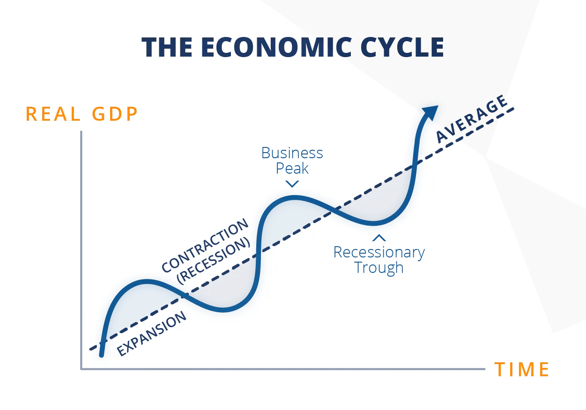

- Một chu kỳ kinh tế bao gồm 4 giai đoạn:
- 🃠Suy thoái:
- Là giai đoạn ná»n kinh tế giảm từ đỉnh xuống đáy. Các hoạt động liên quan đến kinh tế sẽ bị đình trệ và ảm đạm. Nếu tình trạng suy giảm nghiêm trá»ng hơn, có thể coi đây là một cuộc khủng hoảng kinh tế(đại khủng hoảng)
- Chỉ số vĩ mô:
- GDP giảm trong Ãt nhất là 2 hoặc nhiá»u quý liên tiếp
- CPI đi ngang và giảm. Lạm phát tạo đỉnh và tụt dần.
- Vị thế các doanh nghiệp:
- Sản suất nhiá»u ➡️ dư thừa ➡️ cung > cầu ➡️ cắt giảm sản lượng ➡️ lợi nhuáºn không tăng trưởng tháºm chà còn giảm ➡️ giá chứng khoán giảm.
- Vị thế của người tiêu dùng:
- Giá hà ng hoá cao ➡️ tiết kiệm ➡️ dư thừa hà ng hoá ➡️ nhu cầu sản xuất thêm hà ng hoá giảm ➡️ nhân công lao động giảm ➡️ thu nháºp giảm.
- 🌱 Phục hồi:
- Ná»n kinh tế giảm dần sự suy thoái, bắt đầu đi ngang tạo ná»n, sau đó sẽ phục hồi dần dần.
- Chỉ số vĩ mô:
- GDP ngừng giảm, đi ngang
- Tỷ lệ thất nghiệp lớn
- Thu nháºp bình quân đầu người giảm mạnh
- Vị thế doanh nghiệp:
- Tình hình kinh doanh dần ổn định lại ➡️ có đơn hà ng mới ➡️ tăng sản xuất ➡️ phục hội lại nhân công ➡️ hoạt động kinh doanh tốt lên ➡️ tạo nhiá»u cơ hội việc là m
- Vị thế người tiêu dùng:
- Doanh nghiệp thuê thêm nhân công ➡️ thu nháºp dần cải thiện ➡️ chi tiêu nhiá»u hơn ➡️ nhu cầu tăng dần > cung ➡️ giá hà ng hoá tăng dần
- 🌿 Tăng trưởng:
- Ná»n kinh tế bắt đầu tăng trưởng, có những tÃn hiệu tốt hơn. Hầu hết các hoạt động kinh tế được đẩy mạnh trong giai đoạn nà y.
- Chỉ số vĩ mô:
- GDP tăng trường
- Hầu hết các chỉ số kinh tế đều tăng
- Chỉ số tÃn dụng vay tiá»n cũng tăng lên để các doanh nghiệp mở rộng sản xuất
- Lạm phát tăng do tiá»n lưu thông nhiá»u trên thị trường
- Giá cả các loại hà ng hoá tà i chÃnh tăng cao: Chứng khoán, Bất Động Sản, Và ng, …
- Vị thế doanh nghiệp:
- Cầu > cung ➡️ giá hà ng hoá tăng cao ➡️ doanh nghiệp vay tiá»n để mở rộng sản xuất ➡️ hà ng hoá sản xuất ra để cân bằng nhu cầu
- Vị thế người lao động:
- Doanh nghiệp thuê nhân công nhiá»u hơn + tăng lương ➡️ thu nháºp tăng ➡️ tiêu dùng nhiá»u hơn ➡️ cầu và cung cùng tăng trưởng
- 🌳 Tạo đỉnh:
- Giai đoạn bùng nổ mạnh mẽ của ná»n kinh tế. Tất cả đều được đẩy lên cao nhất và có xu hướng tạo đỉnh, má»i thứ vượt quá tầm kiểm soát, bắt đầu xuất hiện nguy cơ sụp đổ.
- Chỉ số vĩ mô:
- GDP ngừng tăng và bắt đầu giảm
- Chỉ số CPI đạt đỉnh
- Giống như đấy, có thể kéo dà i và i tháng hoặc và i quý (thá»i kỳ thịnh vượng)
- Vị thế doanh nghiệp:
- Ngừng mở rộng sản xuất, doanh thu lợi nhuáºn đều đạt kết quả tốt nhất ➡️ doanh nghiệp phát hà nh thêm cổ phiếu để tăng vốn ➡️ giá cổ phiếu bắt đầu ngừng tăng và đi ngang.
- Vị thế người tiêu dùng:
- Bắt đầu nháºn thấy giá hà ng hoá cao hơn thu nháºp ➡️ giảm mức chi tiêu ➡️ cầu giảm dần, cung nhiá»u lên ➡️ bắt đầu quay trở vá» giai đoạn suy thoái 🍃
- 🃠Suy thoái:
Link bà i viết: https://www.memostockvn.com/p/chu-ky-kinh-te-the-economic-cycle